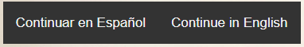

Manual de Usuario
Aqui te hablaremos de como funciona esta aplicacion web.
Lo primero sera seleccionar el idioma en el que queremos trabajar.

Una vez seleccionado el idioma daremos paso a elegir que es lo que queremos ver.
En el manual de instalacion aparecra esto.
En el manual de usuario aparecera esto que estas leyendo.
En los postres aparecra esto y solo tienes que dar click en la reseta que quieras.
Tambien tenemos sugerencias que aparecen en ciertas recetas de postres y estan representadas por estos botones. Se trata de sugerencias de recetas que puedes hacer con los postres.